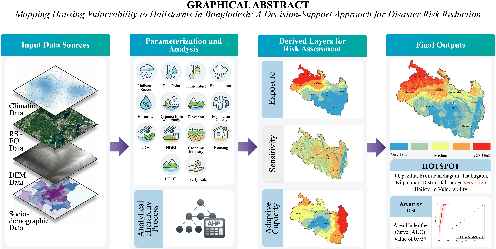
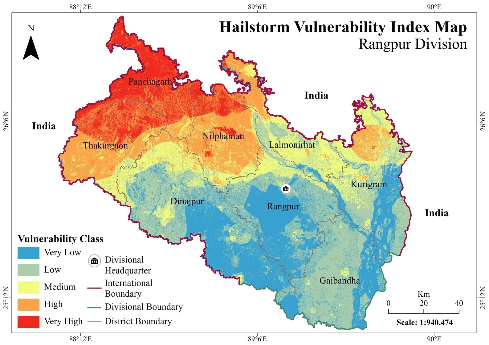

The first upazila-level Hailstorm Vulnerability Index for Rangpur Division, built by integrating the Analytical Hierarchy Process with GIS across exposure, sensitivity, and adaptive capacity, to turn a long-overlooked hazard into a targetable decision-support tool.
Hailstorms are a recurrent yet chronically underexamined climate hazard in South Asia, with disproportionate consequences for structurally fragile housing in socioeconomically deprived communities. In Bangladesh's Rangpur Division, high hailstorm frequency, near-ubiquitous sub-standard housing, and entrenched poverty converge into a compounded vulnerability that existing disaster-risk frameworks, built mainly around floods and cyclones, have never resolved at an actionable, sub-district resolution.
This study builds the first upazila-level Hailstorm Vulnerability Index (HVI) by integrating the Analytical Hierarchy Process (AHP) with GIS across three IPCC-aligned components (exposure, sensitivity, and adaptive capacity) operationalized through fifteen indicators drawn from meteorological records, satellite imagery, and census data.

District-level mean scores (0–5 scale) across the three HVI sub-indices. Panchagarh and Thakurgaon lead on Exposure (4.92 and 4.43 against a divisional mean of 2.89); Sensitivity is comparatively uniform across all eight districts (2.6–3.1); Kurigram's Adaptive Capacity score of 4.84 is the clearest outlier, consistent with the paper's inverse exposure–adaptive-capacity relationship. Dashed line marks the divisional mean per axis.

Hailstorm damage to roofs, walls, and windows compounds quickly into cascading loss for agriculture-dependent households: damaged crops translate into income shocks, food insecurity, and entrenched poverty, undermining the very resources needed for recovery. By making vulnerability spatially explicit at the upazila level, this index gives disaster-risk planners a concrete way to prioritize where climate-resilient housing investment will have the greatest effect, rather than treating hailstorm risk as an afterthought to flood and cyclone planning.